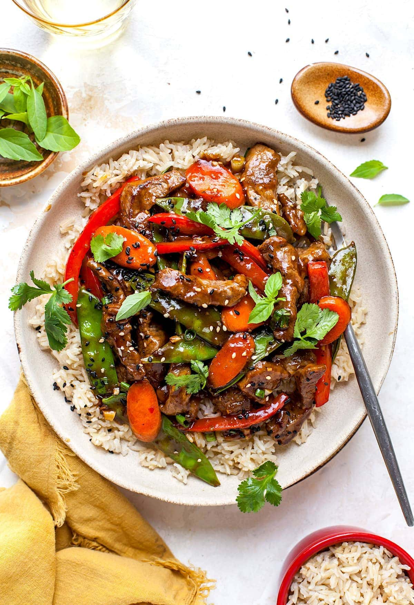

Beef Stir Fry Recipe

Ingredients:
- 1 lb beef tenderloin, thinly sliced
- 1 red bell pepper, chopped
- 1 green bell pepper, chopped
- 3 tablespoons oyster sauce
- 1 teaspoon soy sauce
- ½ teaspoon ground black pepper
- Cooking oil for stir-frying
Procedure:
- Marinate the Beef:
- In a bowl, combine the thinly sliced beef tenderloin with 3 tablespoons of oyster sauce, 1 teaspoon of soy sauce, and ½ teaspoon of ground black pepper. Mix well and let it marinate for about 30 minutes.
- Stir-Fry:
- Heat a wok or frying pan over high heat and add some cooking oil.
- the marinated beef slices and stir-fry until they’re browned and cooked through.
- Add the chopped red and green bell peppers. Stir-fry for a few minutes until they’re slightly tender but still crisp.
- Serve Hot:
- Transfer the beef stir fry to a serving plate.
- Serve it while hot with steamed rice or noodles.